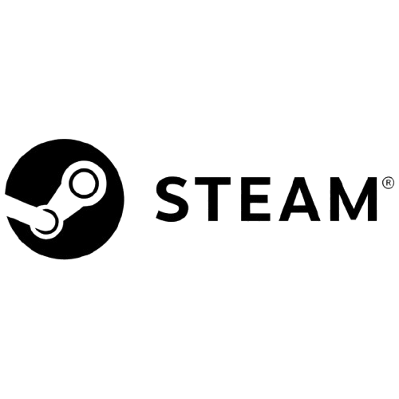

| HISTORIA |
IMPACTO |
NUESTRA SITUACION ACTUAL |
VISIONES A FUTURO |
PRODUCTOS O SERVICIOS |
VIDEOS |
INTERACCION |
GALERIA |
AYUDA |
HISTORIA
Origen y creacion:
La historia de Steam comenzó en 2003, cuando Valve Corporation introdujo la plataforma como una solución para
distribuir actualizaciones y parches para sus propios juegos, como Counter-Strike y Half-Life. En 2004, con el
lanzamiento de Half-Life 2, Steam se convirtió en la única vía para activar y jugar el título, marcando un cambio
significativo en la industria del videojuego. A lo largo de los años, Steam ha incorporado características como
Steam Community, Steam Workshop y SteamOS, consolidándose como una plataforma integral para gamers y desarrolladores.
Bases y Funcionamiento
Steam es una plataforma de distribución digital que permite a los usuarios:
- Comprar y descargar videojuegos.
- Administrar su biblioteca de juegos en la nube.
- Conectarse con otros jugadores mediante chats y comunidades.
- Acceder a ofertas y promociones, como las famosas rebajas de Steam.
- Jugar en la nube con Steam Cloud.
Impacto
Steam ha tenido un impacto profundo en la industria del videojuego, transformando la distribución digital y ofreciendo
a los desarrolladores una plataforma directa para llegar a los jugadores. En 2024, la industria de los videojuegos generó más de
280,000 millones de dólares, con Steam añadiendo 18,700 nuevos juegos a su catálogo, aunque solo el 15% del tiempo de juego se dedicó
a estos nuevos lanzamientos. Además, Steam ha influido en modelos de negocio y prácticas de monetización, estableciendo estándares que
han sido adoptados por otras plataformas.
Nuestra Situación Actual
En la actualidad, Steam cuenta con una base de usuarios activa y diversa, ofreciendo más de 50,000 juegos en su catálogo. La plataforma
ha mantenido su relevancia al adaptarse a las tendencias emergentes, como la incorporación de tecnologías de realidad virtual y la expansión
hacia dispositivos portátiles como el Steam Deck. Además, ha implementado medidas de seguridad robustas, demostradas durante un ataque DDoS masivo
en agosto de 2024, donde su infraestructura protegió eficazmente los datos y la experiencia del usuario.
Visiones a Futuro
Valve continúa innovando y adaptándose a las cambiantes demandas del mercado. La empresa ha reforzado políticas para garantizar una experiencia
de usuario de calidad, como la prohibición de juegos que obligan a los jugadores a ver anuncios intrusivos. Además, se espera que Valve siga explorando
nuevas tecnologías y colaboraciones para mantener a Steam a la vanguardia de la industria del videojuego.
Productos o Servicios
Steam ofrece una variedad de servicios y productos que enriquecen la experiencia del usuario
- Venta de Juegos: Una amplia gama de títulos de diversos géneros y desarrolladores, con frecuentes descuentos y promociones.
- Steam Workshop: Una plataforma que permite a los usuarios crear, descubrir y descargar contenido generado por la comunidad, como mods y objetos personalizados.
- SteamOS: Un sistema operativo basado en Linux diseñado para juegos, que forma la base de dispositivos como las Steam Machines y el Steam Deck.
- Acceder a ofertas y promociones, como las famosas rebajas de Steam.
- Steam Deck: Una consola portátil que permite a los jugadores acceder a su biblioteca de Steam en cualquier lugar, ofreciendo una experiencia similar a la de un PC de juegos.
- Steam Cloud: Un servicio que permite guardar partidas y configuraciones en la nube, facilitando el acceso desde diferentes dispositivos.
- SteamVR: Soporte para experiencias de realidad virtual, compatible con una variedad de dispositivos VR.